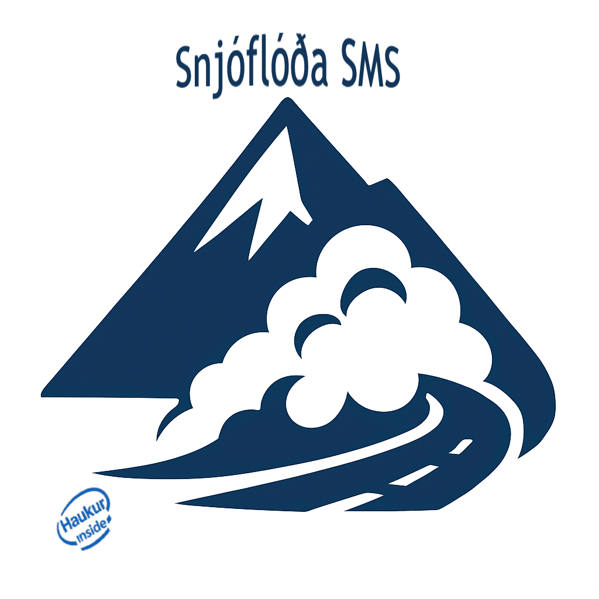

SNJÓFLÓÐA SMS
Þrep snjóflóðavaktar:
Velja stig viðvörunar...
Fyrsta stig
Annað stig
Þriðja stig
Fjórða stig
Fjórða stigi aflýst
Þriðja stigi aflýst
Staðsetning:
Raknadalshlíð
Flateyrarvegur
Súðavíkurhlíð
Siglufjarðarvegur
Ólafsfjarðarmúli
Fagridalur, Grænafell
Hvenær:
í dag
síðar í dag
í kvöld
í nótt
á morgun
í fyrramálið
fyrir hádegi
eftir hádegi
Vikudagur:
mánudag
þriðjudag
miðvikudag
fimmtudag
föstudag
laugardag
sunnudag
Staða - Opið/Lokað:
Opið
Opið, óvissustig í gildi.
Lokað
Lokað, unnið að hreinsun.
Tími (HH:MM):
Rauntími 🕒
Muna að senda ekki sms án samráðs við verkstjóra svæðis nema snjóflóð hafi þegar lokað vegi.
ATH á 4. stigi er sjálfkrafa sett inn Lokað.
SMS til útsendingar
Ekkert þrep valið
Afrita texta á klippiborð 📋